Part 3. Let's Build the Windows Box That Sends the Logs
File - New Virtual Machine - Custom (advanced) - Next
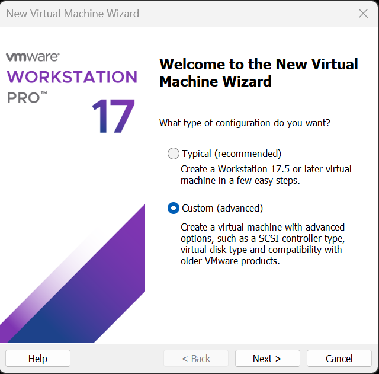
I actually took step-by-step screenshots of the whole setup wizard and then deleted them all, because they didn't feel like they added anything. Here's how my Windows VM ended up configured.
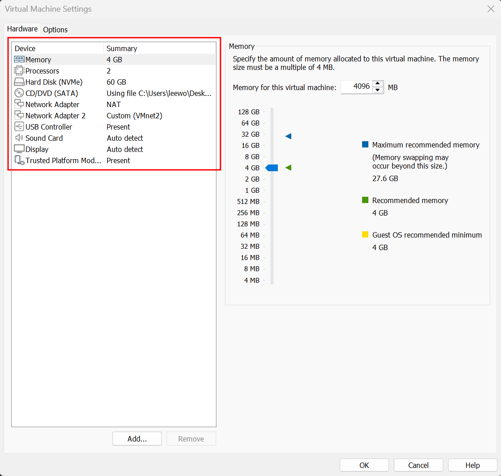
Once Windows finished installing, I installed VMware Tools. Why bother:
Ctrl+Alt. Right now I have to keep hitting Ctrl+Alt every time I want out of the VM.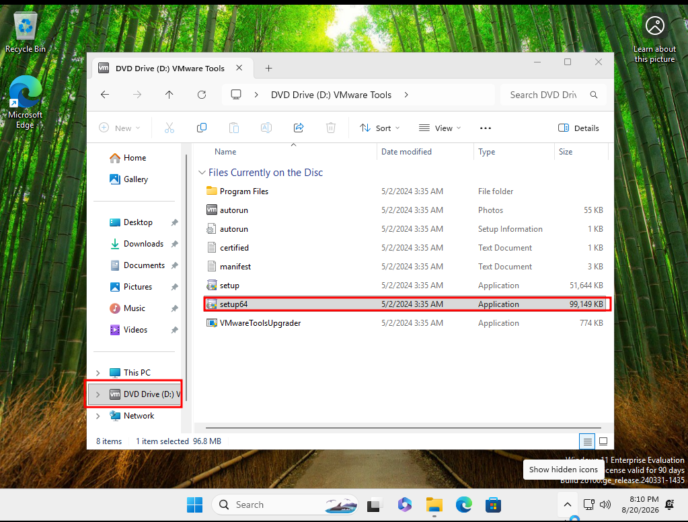
Time to pin down the IP on this box too. Win + R - ncpa.cpl - Enter
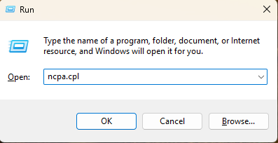
There are two adapters in here.
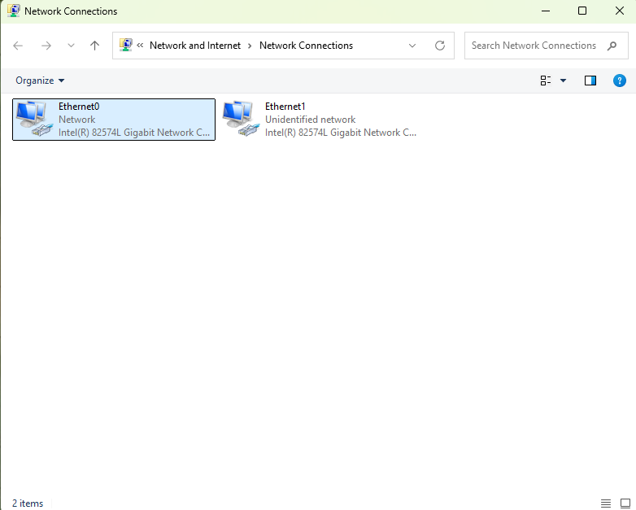
The names don't tell you much, so go by IP instead. The first adapter has 192.168.136.131, that's the NAT one.
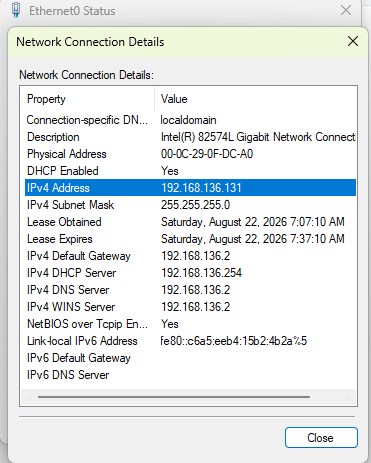
The one we care about isn't NAT, it's VMnet2.
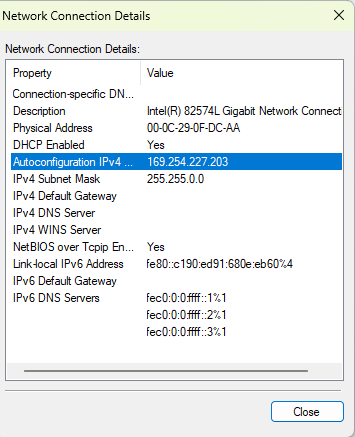
Properties - double click Internet Protocol Version 4 (TCP/IPv4), pick Use the following IP address, and set the statc IP below.
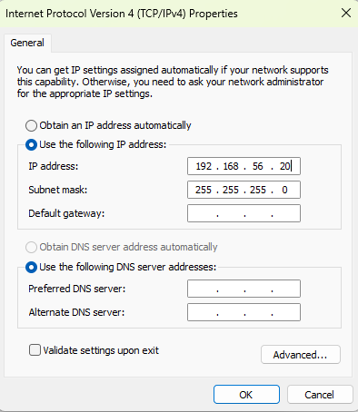
I confirmed the change with ipconfig in PowerShell, and pings to the Splunk server go through fine.
PS C:\Users\analyst> ipconfig
Windows IP Configuration
Ethernet adapter Ethernet1:
Connection-specific DNS Suffix . :
Link-local IPv6 Address . . . . . : fe80::c190:ed91:680e:eb60%4
IPv4 Address. . . . . . . . . . . : 192.168.56.20
Subnet Mask . . . . . . . . . . . : 255.255.255.0
Default Gateway . . . . . . . . . :
Ethernet adapter Ethernet0:
Connection-specific DNS Suffix . : localdomain
Link-local IPv6 Address . . . . . : fe80::c6a5:eeb4:15b2:4b2a%5
IPv4 Address. . . . . . . . . . . : 192.168.136.131
Subnet Mask . . . . . . . . . . . : 255.255.255.0
Default Gateway . . . . . . . . . : 192.168.136.2
PS C:\Users\analyst> ping 192.168.56.10
Pinging 192.168.56.10 with 32 bytes of data:
Reply from 192.168.56.10: bytes=32 time<1ms TTL=64
Reply from 192.168.56.10: bytes=32 time<1ms TTL=64
Reply from 192.168.56.10: bytes=32 time<1ms TTL=64
Reply from 192.168.56.10: bytes=32 time<1ms TTL=64
Ping statistics for 192.168.56.10:
Packets: Sent = 4, Received = 4, Lost = 0 (0% loss),
Approximate round trip times in milli-seconds:
Minimum = 0ms, Maximum = 0ms, Average = 0ms
After that, I went into Windows Security - Virus & threat protection and turned all of these Off:
This is so my attack simulation payloads don't get deleted before they even get a chance to run.
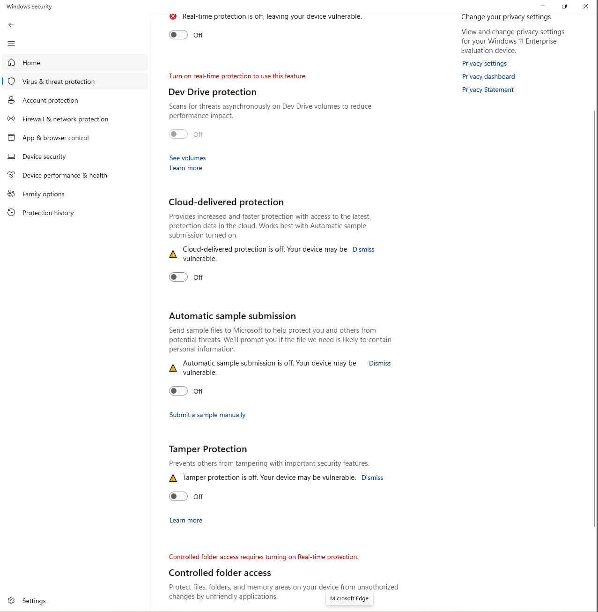
Stock Windows event logs only get you so far for detection, so let's grab Sysmon. It's a Sysinternals tool that records things like process creation, network connections, file creation, and registry changes in real detail.
The SwiftOnSecurity file is a Sysmon config. From what I gather, it's a community-vetted starting point that's been around a long time, so a lot of people use it.
Sysmon download
https://download.sysinternals.com/files/Sysmon.zip
Config file (SwiftOnSecurity)
https://raw.githubusercontent.com/SwiftOnSecurity/sysmon-config/master/sysmonconfig-export.xml
I made a C:\Tools folder and dropped Sysmon64.exe and the config file in there.
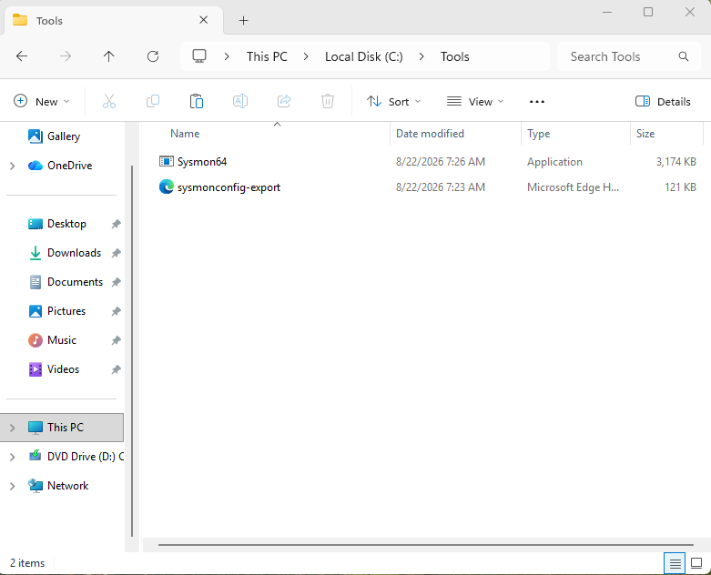
Open PowerShell as administrator and run the command below. Here's what a successful install looks like:
PS C:\Tools> .\Sysmon64.exe -accepteula -i sysmonconfig-export.xml
System Monitor v15.21 - System activity monitor
By Mark Russinovich and Thomas Garnier
Copyright (C) 2014-2026 Microsoft Corporation
Using libxml2. libxml2 is Copyright (C) 1998-2012 Daniel Veillard. All Rights Reserved.
Sysinternals - www.sysinternals.com
Loading configuration file with schema version 4.50
Sysmon schema version: 4.91
Configuration file validated.
Sysmon64 installed.
SysmonDrv installed.
Starting SysmonDrv.
SysmonDrv started.
Starting Sysmon64..
Sysmon64 started.
Sysmon logs go to a different channel than regular Windows logs.
Microsoft-Windows-Sysmon/Operational
In Event Viewer that's Applications and Services Logs - Microsoft - Windows - Sysmon - Operational. This is the exact path I'll be pointing the Forwarder at later.
The Splunk Enterprise I installed back in Part 1 is what receives, stores, and searches the logs. The Universal Forwarder I'm installing here on the win-target box is what collects logs as they're generated and ships them over to Splunk.
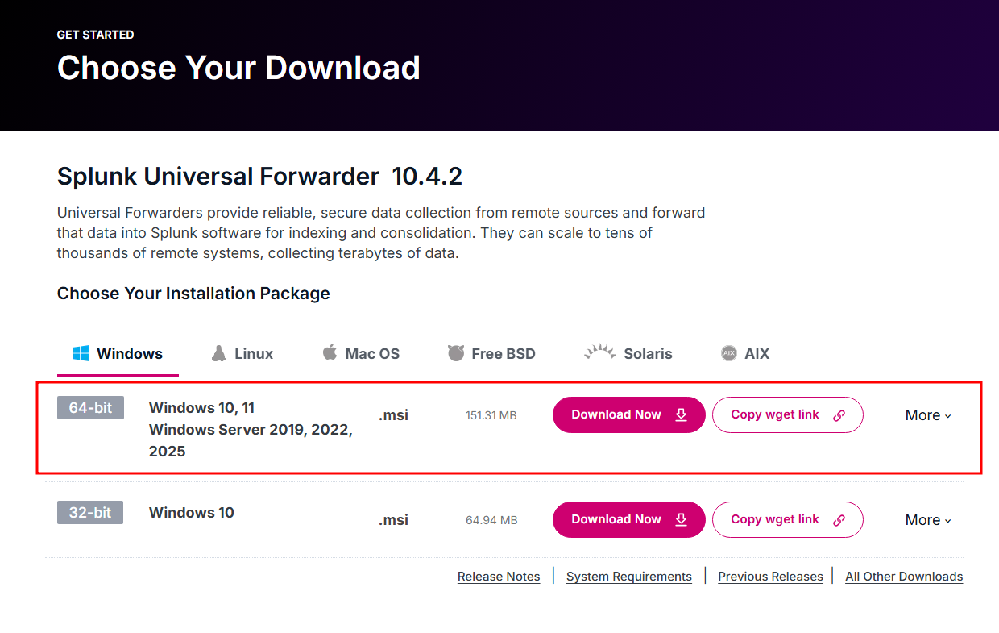
Check Application Logs, Security Log, and System Log, and then leave the rest empty.
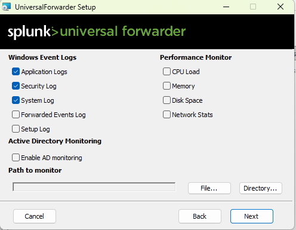
Port 9997 on our Splunk server is the door the logs come in through.
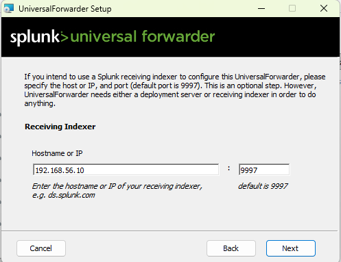
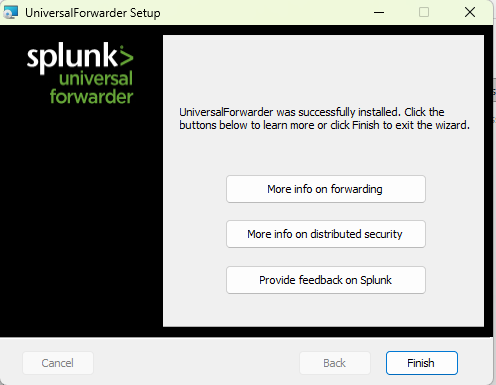
Windows PowerShell
Copyright (C) Microsoft Corporation. All rights reserved.
Install the latest PowerShell for new features and improvements! https://aka.ms/PSWindows
PS C:\WINDOWS\system32> get-service splunkforwarder
Status Name DisplayName
------ ---- -----------
Running SplunkForwarder splunkforwarder
Universal Forwarder is up and running! The isolated path from 192.168.56.20 to 192.168.56.10:9997 is alive, and Splunk is receiving and indexing.
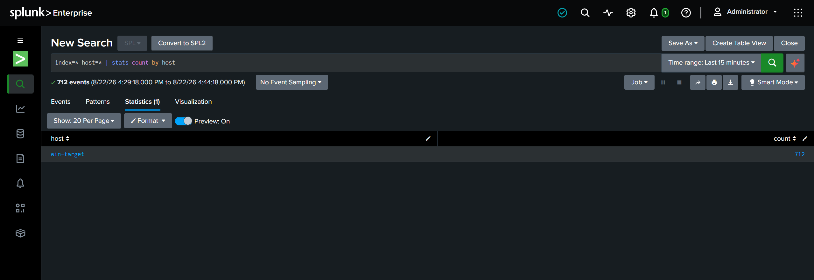
inputs.confPS C:\WINDOWS\system32> cd "C:\Program Files\SplunkUniversalForwarder\etc\apps\SplunkUniversalForwarder\local\"
PS C:\Program Files\SplunkUniversalForwarder\etc\apps\SplunkUniversalForwarder\local> dir
Directory: C:\Program Files\SplunkUniversalForwarder\etc\apps\SplunkUniversalForwarder\local
Mode LastWriteTime Length Name
---- ------------- ------ ----
-a---- 8/22/2026 9:41 AM 33 app.conf
-a---- 8/22/2026 9:41 AM 319 inputs.conf
The three WinEventLog stanzas I checked during install are all there, but none of them specify an index.
PS C:\Program Files\SplunkUniversalForwarder\etc\apps\SplunkUniversalForwarder\local> type .\inputs.conf
[WinEventLog://Application]
checkpointInterval = 5
current_only = 0
disabled = 0
start_from = oldest
[WinEventLog://Security]
checkpointInterval = 5
current_only = 0
disabled = 0
start_from = oldest
[WinEventLog://System]
checkpointInterval = 5
current_only = 0
disabled = 0
start_from = oldest
So I opened inputs.conf in Notepad and edited it like this:
index = windows or index = sysmon. This decides which index the data goes to. Without it, everything lands in main. The windows and sysmon indexes I created earlier finally get used here.[WinEventLog://Microsoft-Windows-Sysmon/Operational] adds the Sysmon channel.renderXml = false sends Sysmon events in a human-readable form instead of raw XML. If you leave it true, Splunk shows you a blob of XML and field extraction becomes a pain.start_from = oldest reads the backlog already sitting in the channel. Sysmon has been recording for a while now, so all of that comes up first.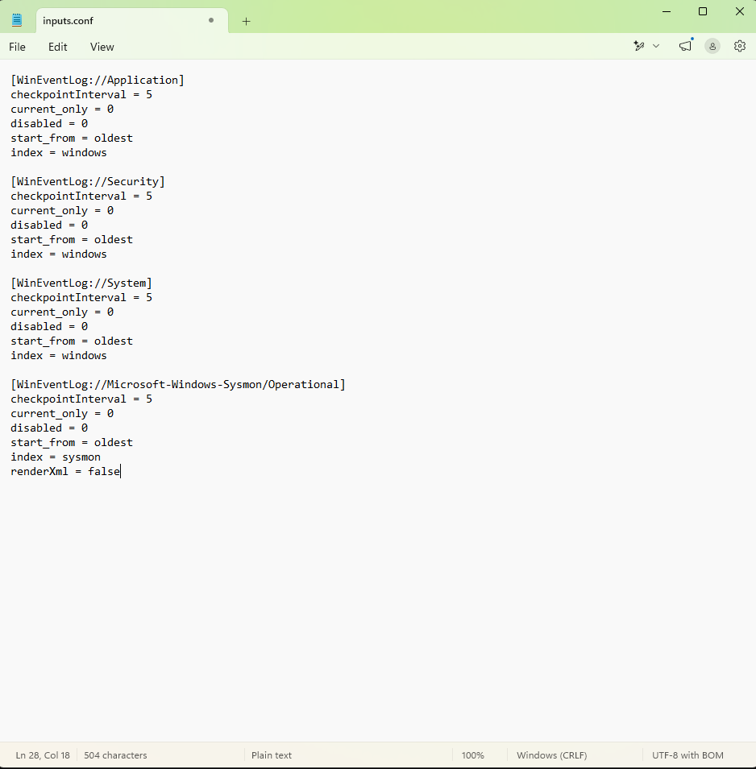
Now restart the Splunk Forwarder and check in Splunk Enterprise that the Sysmon and Windows events are landing in the sysmon and windows indexes respectively.
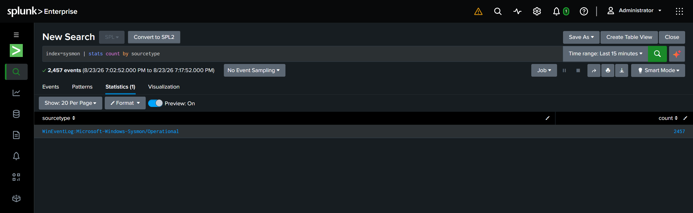
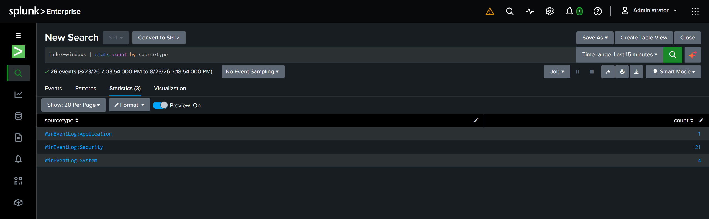
That's it for today. Done!